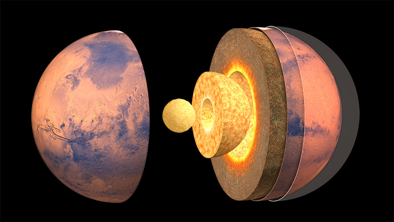

مقدمة
المريخ هو الكوكب الرابع في النظام الشمسي ويطلق عليه غالبًا "الكوكب الأحمر" بسبب لونه الذي يميل إلى الأحمر نتيجة وجود أكسيد الحديد (الصدأ) على سطحه. يعتبر المريخ أحد أكثر الكواكب دراسة في النظام الشمسي، وذلك بسبب تشابه بعض خصائصه مع الأرض، مثل وجود مواسم وحركة دوران مشابهة للأرض. كما أنه الكوكب الذي يعتبر أكثر احتمالاً لاستكشاف الحياة في المستقبل بسبب ظروفه التي قد تكون ملائمة في الماضي. يتميز المريخ بوجود جبال ضخمة مثل "أوليمبوس مونز"، وهو أكبر بركان في النظام الشمسي، بالإضافة إلى وديان عميقة مثل "فيلوس مارينس". يحتوي المريخ أيضًا على قطبين مغطين بالثلوج، مما يشير إلى وجود الماء في حالته الصلبة.
